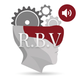
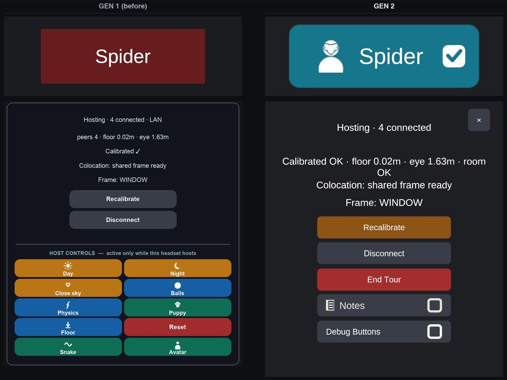
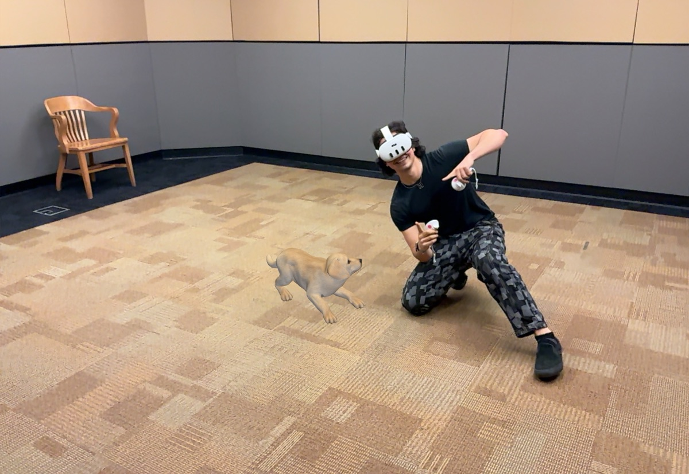
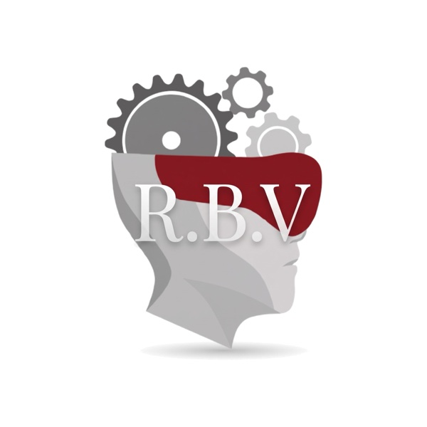

Reality
Becomes
Virtual
Dr. Bailenson had the idea for Reality Becomes Virtual (the sequel to Virtual Becomes Reality) for many years, and this past summer it came to life with a wonderful team from the Virtual Human Interaction Lab (Emmanuel Corona and Noé Chicas-Aranda).
The idea: networked headsets creating a social way to get a glimpse at the augmented reality that is coming. AR is the future that Meta, Snap, Apple and every big tech company are betting on, especially with the rise of AI.
Building from the foundation Dr. Bailenson envisioned and built, I've been completely captivated by this project, working deep into the night on many different parts of it: starting with making it more reliable 01 ↓, polishing its design language 02 ↓, and adding many new features 03 ↓.
01Reliable
The original summer build needed tons of work to give a seamless experience. So my first order of business was to make setup simple, the system robust to user error, and to make sure it never fails silently.
-
Before
- Open Max, the sound manager
- Find the auralizer, turn sound on
- Open Unity Hub
- Open the project
- Start the host in the headset
- Press Play in Unity
- No error checks
- No saved tour logs
- No live headset logs
Now
Hit Start RBV.
- Guides you through errors. It checks every piece, stops and says what is wrong, like "Auralizer not listening".
- Records every tour. A saved log of everything the room fires, one file per run.
- Live logs from every headset. Errors in one place mean every system gets built faster: in Chorus, the log showed where each frame's time went, so three passes became one.
-
Auto end
The headset's sensors end the tour on their own.
02Designed
One icon per action. Color by meaning. No silent actions.
I went through the entire design language of the system, making simple, common-sense additions: every action gets its own icon, and the colors follow one consistent language. Every action the host takes now gives visual feedback on what others are experiencing, because in mixed reality you don't always know what others are seeing.
From there I designed a new way to control the tour, the experience path (working title). In the original system the host had to look down at their hands to set off each moment. Now you pre-program a path, in the headset or online, send it over with a QR code See ↓, and press one button, even with your hands behind your back while you talk with people. The host stays connected to the group, and a favorite path can be run again and again.
-

User interface design printout
I printed the entire UI to put notes on it (because the physical world is still good sometimes).
-

Redesign
Before, after.
-

Experience path
Plan the tour wherever you like, scan it in, and just click through.
03New
With the tour steadier, I've been adding to it. Some of it is new for visitors, and some is groundwork for what the lab builds next. Three so far:
Chorus: headsets see better together.

What I'm most proud of lately is a foundational system with three pillars, being built to be used by many other experiences. It started midway through class, when I sketched an idea on my hand: throw a real ball, and it splits into virtual balls, more every time the real one hits something.
The catch: object tracking isn't very good on these headsets. But from biomechanical engineering and body tracking, I knew multiple cameras give you lots and lots of data. And we already had them: several cameras, several angles, on people's heads, moving and networked. They just had to work together.
That's Chorus. Like a chorus, everyone works together to get better data and make something greater than any single headset. Its three pillars are tracking, starting with a ball Ball ↓, room, which finds the objects in a room and paints them Room ↓, and body. If I look away from the ball and someone else is looking at it, we still know where it is. Little things like that are just the kernel of what's possible. Eventually the pillars can melt into one, and bring more of the real world into the virtual.
-
Ball Beta
Tracked from every angle.
-
Room objects Beta
The furniture, mapped together.
Dance troupe Beta
The Dance troupe is one example. Full-body tracking from a Quest's own cameras, legs and hands included, is impossible to keep consistent. With Chorus, the headsets people already wear help track each other, with no special equipment. We're only on iteration two, and you can already see the jump from Day 1 to Day 3.
RBV Camera: a movable window into the tour.
So guests can watch what the headsets see, and take a photo home. It also lets us explain occlusion to people who have never heard of it, with a real example in front of them: a little education built into the tour. We use occlusion on the iPad because its LiDAR makes it far better.

On: real people hide virtual things.
Off: the puppy floats in front of everyone.
Cross-platform: Apple Vision Pro. Beta

Alongside the Quest and the iPad, I'm adding Apple Vision Pro, something we're working on as a lab, so they can all share the same tour at once. We're hoping the passthrough and quality possible on Vision Pro allow for an even more immersive experience, or at least let us explore one.